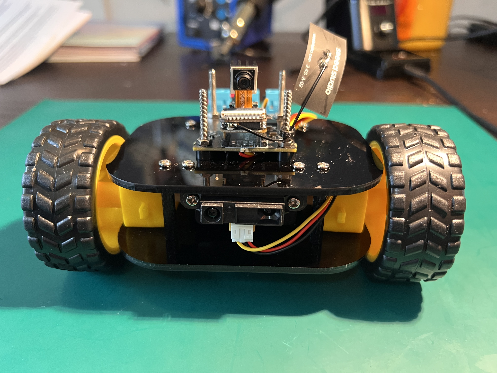
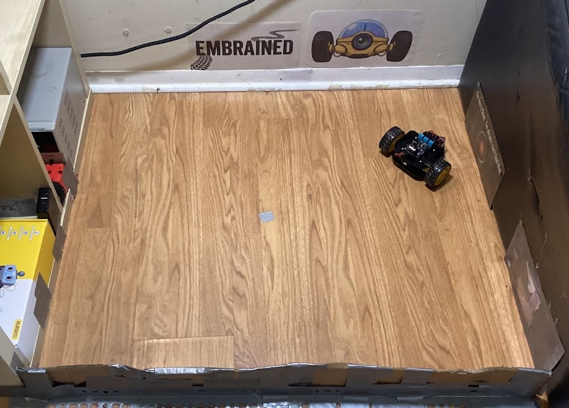
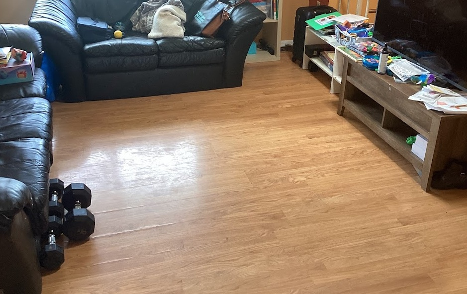

Beta Pilot
Join an open-source project dedicated to unlocking true visual navigation intelligence on heavily constrained edge devices. The Plexus robot is our physical sandbox — a custom-built agent designed specifically to gather dataset transitions and execute neural policies in the real world.
We are building this in public. That means you get access to our real progress and our real bottlenecks. We have successfully conquered the latency challenge using discrete, stop-start neural controllers (via VQ-VAEs and offline CQL). To achieve fluid, uninterrupted autonomy, our next step is transitioning the platform to a Continuous Action Chunking architecture. Eventually, we will scale up to forward models and VLAs—but always under our core constraint: ensuring everything can be controlled remotely and trained on local hardware without ever uploading raw visual data to the cloud.
This leap requires community scale. By joining the Beta Pilot, you become part of a distributed research lab. You'll help us collect the continuous trajectory datasets needed to train these new fluid policies, while experimenting with the bleeding edge of embodied AI in your own environment.
What You Need to Participate
1. A Plexus R&D Kit ($149)
Each beta unit is hand-assembled and tested before shipping. The robot includes all hardware you need — just charge the batteries and connect to WiFi.

2. A Clear Floor Space
Any open area in your home — a section of living room, a hallway, a corner of an office. About 1×1 meter minimum. The space should stay relatively consistent during your data collection (don't rearrange the furniture mid-experiment).


3. A Laptop with a GPU
You'll need a machine with an NVIDIA GPU (4-8 GB VRAM) to train models. Any modern gaming or ML laptop will work. An RTX 3060 or equivalent is ideal. The app itself runs in your browser.
4. Python, Terminal & Isolated Sandbox
We provide automated setup scripts (setup.bat / setup.sh) to install all dependencies (Python 3.12, PyTorch, CUDA, Node.js) into a local, isolated environment to prevent conflicts with your machine's existing setup. The app boots via a simple start.bat script and runs fully locally.
The training pipeline uses Python scripts run from the command line. You don't need to write code from scratch, but you should be comfortable running commands like python scripts/train_vqvae.py and installing dependencies with pip. We provide step-by-step instructions in our Discord.
How to Train a Neural Navigator
The process has five steps. Each one builds on the last.
1. Collect Data
Drive your robot around the arena using WASD keys, or let it explore autonomously with a random-walk controller. The app records every camera frame paired with the motor command that produced it — building a dataset of visual transitions.
2. Prepare the Dataset
A single terminal command pools your raw recording sessions into a unified training set, resizing images and structuring transitions for efficient batch processing.
3. Train a Perception Model (VQ-VAE)
The first neural network learns to compress each camera frame into a compact code — a discrete "token" that captures the essential structure of what the robot sees. This is the robot's learned visual vocabulary of your space.
4. Train a Navigation Policy (CQL)
The second network learns which motor actions move the robot closer to a target location, using the perception tokens as input.
5. Deploy & Watch
Load your trained model into the app's Autonomy Panel and press play. The robot drives itself. The dashboard shows you the AI's decisions in real time — where it thinks it is, where it's trying to go, and what action it's choosing. Built-in evaluation automatically tracks success rates across trials.